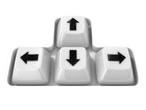

Utilize as setas do seu teclado para controlar o automóvel.
As setas para a esquerda e para a direita têm a função de virar o volante para a esquerda e para a direita, respectivamente.
A seta para cima serve para acelerar.
A seta para baixo serve para realizar a manobra de marcha-atrás ou utilizar os travões do automóvel, caso este esteja em movimento.
100%
Projeto desenvolvido no âmbito da cadeira de Multimédia.
Licenciatura em Engenharia Informática,
Faculdade de Ciências e Tecnologias da Universidade de Coimbra.
Bruno Alves uc2015260196@student.uc.pt
Renato Carvalho uc2015235034@student.uc.pt
Renato Santos uc2015237457@student.uc.pt